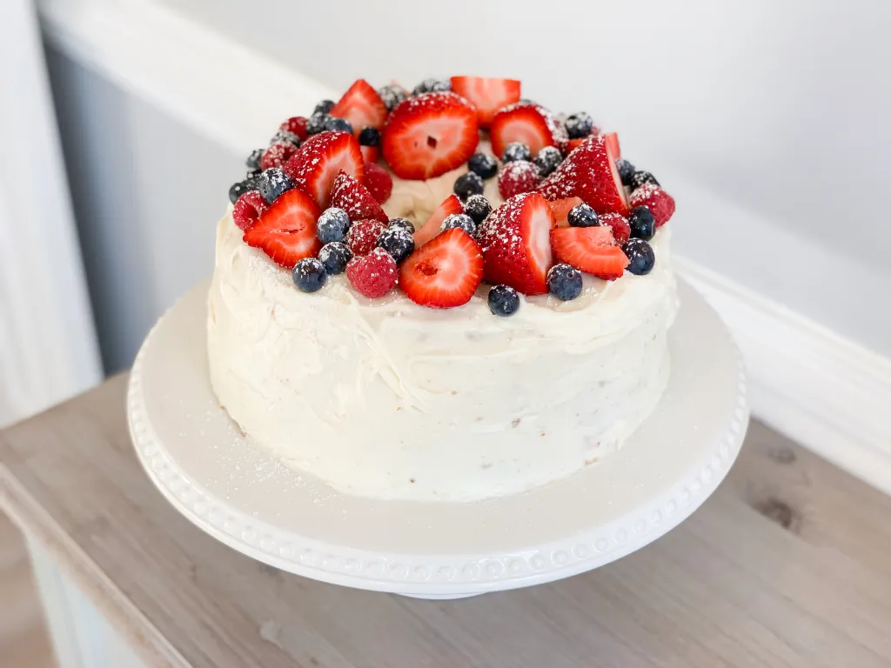

Angel Food Cake
I use this recipe with a couple of tweaks.
Ingredients
- 12 egg whites
- 1 and 1/2 teaspoons cream of tartar (or some fresh lemon juice)
- 1 and 3/4 cups (350 grams) granulated sugar
- Splash of vanilla extract
- 1 cup + 2 tablespoons (133 grams) cake flour
- Pinch of salt
Instructions
- Preheat oven to 325°F (160°C).
-
In a mixer with a whisk attachment, whip the egg whites and cream of
tartar on low speed at first, increasing the speed after a couple of
minutes. Slowly add 100 grams (0.5 cups) of the fine sugar, in “rain”
form. Add the vanilla extract and mix for 1 more minute. You want to
get soft peaks, not meringue.
-
In 4-5 additions, sift the flour, salt, and rest of the sugar into the
egg whites, gently folding with a rubber spatula.
-
Pour the batter into an ungreased 9-inch pan or a muffin pan. It’ll
make around 15 normal-sized muffins.
-
Bake until a toothpick comes out clean. It’s around 20 minutes for
muffins and 45 minutes for a cake.
-
To cool down the cake, flip it upside-down on a wire rack for a few
hours, until completely cool. Running a knife around the edges will
release the cake.
Note: whipped heavy cream and berries would be perfect
toppings.
